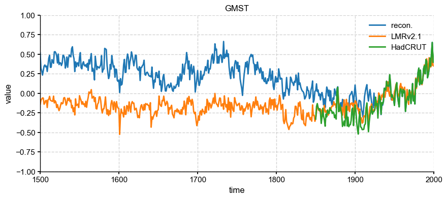

Reconstruction using GraphEM¶
Expected time to run through: 10 mins
This tutorial demonstrates how to get a reconstruction using GraphEM, leveraging HadCRUT4 and PAGES2k.
Test data preparation¶
To go through this tutorial, please prepare test data following the steps:
Download the test case named “PAGES2k_HadCRUT” with this link. Create a directory named “testcases” in the same directory where this notebook sits. Put the unzipped direcotry “PAGES2k_HadCRUT” into “testcases”.
Below, we first load some useful packages, including our GraphEM.
[1]:
%load_ext autoreload
%autoreload 2
import LMRt
import GraphEM
import os
import numpy as np
import pandas as pd
import xarray as xr
import matplotlib.pyplot as plt
Low-level workflow¶
[2]:
job = GraphEM.ReconJob()
[3]:
job.load_configs('./testcases/PAGES2k_HadCRUT/configs.yml', verbose=True)
GraphEM: job.load_configs() >>> loading reconstruction configurations from: ./testcases/PAGES2k_HadCRUT/configs.yml
GraphEM: job.load_configs() >>> job.configs created
GraphEM: job.load_configs() >>> job.configs["job_dirpath"] = /Users/fzhu/Github/GraphEM/docsrc/tutorial/testcases/PAGES2k_HadCRUT/recon
GraphEM: job.load_configs() >>> /Users/fzhu/Github/GraphEM/docsrc/tutorial/testcases/PAGES2k_HadCRUT/recon created
{'anom_period': [1951, 1980],
'calib_period': [1930, 2000],
'job_dirpath': '/Users/fzhu/Github/GraphEM/docsrc/tutorial/testcases/PAGES2k_HadCRUT/recon',
'job_id': 'LMRt_quickstart',
'obs_path': {'tas': './data/obs/HadCRUT.5.0.1.0.analysis.anomalies.ensemble_mean.nc'},
'obs_varname': {'lat': 'latitude', 'lon': 'longitude', 'tas': 'tas_mean'},
'proxydb_path': './data/proxy/pages2k_dataset.pkl',
'ptype_list': ['coral.d18O',
'coral.SrCa',
'coral.calc',
'tree.TRW',
'tree.MXD'],
'recon_period': [1500, 2000]}
[5]:
job.load_proxydb(verbose=True)
GraphEM: job.load_proxydb() >>> job.configs["proxydb_path"] = /Users/fzhu/Github/GraphEM/docsrc/tutorial/testcases/PAGES2k_HadCRUT/data/proxy/pages2k_dataset.pkl
GraphEM: job.load_proxydb() >>> 692 records loaded
GraphEM: job.load_proxydb() >>> job.proxydb created
[6]:
job.filter_proxydb(verbose=True)
GraphEM: job.filter_proxydb() >>> filtering proxy records according to: ['coral.d18O', 'coral.SrCa', 'coral.calc', 'tree.TRW', 'tree.MXD']
GraphEM: job.filter_proxydb() >>> 510 records remaining
[7]:
# ptype_season = {}
# for k, v in job.proxydb.type_dict.items():
# ptype_season[k] = list(range(1, 13)) # annual
# job.seasonalize_proxydb(ptype_season, verbose=True)
job.seasonalize_proxydb(verbose=True)
GraphEM: job.seasonalize_proxydb() >>> job.configs["ptype_season"] = {'coral.d18O': [1, 2, 3, 4, 5, 6, 7, 8, 9, 10, 11, 12], 'coral.SrCa': [1, 2, 3, 4, 5, 6, 7, 8, 9, 10, 11, 12], 'coral.calc': [1, 2, 3, 4, 5, 6, 7, 8, 9, 10, 11, 12], 'tree.TRW': [1, 2, 3, 4, 5, 6, 7, 8, 9, 10, 11, 12], 'tree.MXD': [1, 2, 3, 4, 5, 6, 7, 8, 9, 10, 11, 12]}
GraphEM: job.seasonalize_proxydb() >>> seasonalizing proxy records according to: {'coral.d18O': [1, 2, 3, 4, 5, 6, 7, 8, 9, 10, 11, 12], 'coral.SrCa': [1, 2, 3, 4, 5, 6, 7, 8, 9, 10, 11, 12], 'coral.calc': [1, 2, 3, 4, 5, 6, 7, 8, 9, 10, 11, 12], 'tree.TRW': [1, 2, 3, 4, 5, 6, 7, 8, 9, 10, 11, 12], 'tree.MXD': [1, 2, 3, 4, 5, 6, 7, 8, 9, 10, 11, 12]}
GraphEM: job.seasonalize_proxydb() >>> 510 records remaining
GraphEM: job.seasonalize_proxydb() >>> job.proxydb updated
[8]:
job.load_obs(varname_dict={'lat': 'latitude', 'lon': 'longitude', 'tas': 'tas_mean'}, verbose=True)
GraphEM: job.load_obs() >>> loading instrumental observation fields from: {'tas': '/Users/fzhu/Github/GraphEM/docsrc/tutorial/testcases/PAGES2k_HadCRUT/data/obs/HadCRUT.5.0.1.0.analysis.anomalies.ensemble_mean.nc'}
GraphEM: job.load_obs() >>> job.obs created
[9]:
job.seasonalize_obs(verbose=True)
GraphEM: job.seasonalize_obs() >>> job.configs["obs_season"] = [1, 2, 3, 4, 5, 6, 7, 8, 9, 10, 11, 12]
GraphEM: job.seasonalize_obs() >>> seasonalized obs w/ season [1, 2, 3, 4, 5, 6, 7, 8, 9, 10, 11, 12]
Dataset Overview
-----------------------
Name: tas
Source: /Users/fzhu/Github/GraphEM/docsrc/tutorial/testcases/PAGES2k_HadCRUT/data/obs/HadCRUT.5.0.1.0.analysis.anomalies.ensemble_mean.nc
Shape: time:171, lat:36, lon:72
GraphEM: job.seasonalize_obs() >>> job.obs updated
/Users/fzhu/Github/LMRt/LMRt/utils.py:258: RuntimeWarning: Mean of empty slice
tmp = np.nanmean(var[inds, ...], axis=0)
[10]:
job.prep_data(verbose=True)
GraphEM: job.prep_data() >>> job.recon_time created
GraphEM: job.prep_data() >>> job.calib_time created
GraphEM: job.prep_data() >>> job.calib_idx created
GraphEM: job.prep_data() >>> job.temp created
GraphEM: job.prep_data() >>> job.df_proxy created
GraphEM: job.prep_data() >>> job.proxy created
GraphEM: job.prep_data() >>> job.lonlat created
[11]:
job.df_proxy
[11]:
| NAm_153 | NAm_165 | Asi_178 | Asi_174 | Asi_198 | NAm_145 | Arc_071 | NAm_102 | NAm_046 | Ocn_065 | ... | NAm_143 | Asi_208 | Asi_119 | Ocn_153 | Asi_026 | Ocn_169 | Asi_201 | Asi_179 | Ocn_071 | Ocn_072 | |
|---|---|---|---|---|---|---|---|---|---|---|---|---|---|---|---|---|---|---|---|---|---|
| 1500.0 | NaN | NaN | 0.994 | NaN | NaN | NaN | 1.06 | NaN | 1.026 | NaN | ... | NaN | 0.805 | 0.849 | NaN | 0.710 | NaN | NaN | NaN | NaN | NaN |
| 1501.0 | NaN | NaN | 1.131 | NaN | NaN | NaN | 0.70 | NaN | 1.058 | NaN | ... | NaN | 0.694 | 0.882 | NaN | 0.759 | NaN | NaN | NaN | NaN | NaN |
| 1502.0 | NaN | NaN | 0.898 | NaN | NaN | NaN | 1.31 | NaN | 1.088 | NaN | ... | NaN | 0.742 | 0.620 | NaN | 0.944 | NaN | NaN | NaN | NaN | NaN |
| 1503.0 | NaN | NaN | 1.032 | NaN | NaN | NaN | 0.70 | NaN | 0.875 | NaN | ... | NaN | 0.677 | 0.413 | NaN | 0.845 | NaN | NaN | NaN | NaN | NaN |
| 1504.0 | NaN | NaN | 0.832 | NaN | NaN | NaN | -0.43 | NaN | 1.139 | NaN | ... | NaN | 0.730 | 0.551 | NaN | 0.702 | NaN | NaN | NaN | NaN | NaN |
| ... | ... | ... | ... | ... | ... | ... | ... | ... | ... | ... | ... | ... | ... | ... | ... | ... | ... | ... | ... | ... | ... |
| 1996.0 | 1.346 | NaN | 1.028 | NaN | 1.647 | 1.146 | 1.36 | 1.033 | 1.373 | NaN | ... | NaN | 1.490 | 0.813 | 9.099227 | 0.922 | NaN | 1.070 | 1.044 | -4.114561 | 8.819362 |
| 1997.0 | NaN | NaN | NaN | NaN | 1.751 | 1.263 | 2.30 | 1.037 | 1.153 | NaN | ... | NaN | 1.278 | 0.864 | 9.192620 | 1.112 | NaN | 1.007 | 1.166 | -4.231963 | 8.767808 |
| 1998.0 | NaN | NaN | NaN | NaN | 1.499 | 1.054 | 0.67 | 1.171 | 1.369 | NaN | ... | NaN | 1.332 | 0.743 | 9.124461 | 1.260 | NaN | 1.111 | 1.161 | -4.427678 | 8.751082 |
| 1999.0 | NaN | NaN | NaN | NaN | 1.054 | 1.067 | 1.47 | NaN | 1.502 | NaN | ... | NaN | 1.161 | 1.269 | 9.073438 | 0.980 | NaN | 1.402 | 0.851 | -4.081667 | 8.825333 |
| 2000.0 | NaN | NaN | NaN | NaN | 0.842 | 0.994 | 1.97 | NaN | 1.674 | NaN | ... | NaN | 0.837 | 1.644 | 9.078696 | 1.152 | NaN | 0.930 | NaN | NaN | NaN |
501 rows × 510 columns
[12]:
print(np.shape(job.temp))
print(np.shape(job.proxy))
print(np.shape(job.lonlat))
(501, 2592)
(501, 510)
(3102, 2)
[13]:
job.save(verbose=True)
LMRt: job.save_job() >>> Prepration data saved to: /Users/fzhu/Github/GraphEM/docsrc/tutorial/testcases/PAGES2k_HadCRUT/recon/job.pkl
LMRt: job.save_job() >>> job.configs["prep_savepath"] = /Users/fzhu/Github/GraphEM/docsrc/tutorial/testcases/PAGES2k_HadCRUT/recon/job.pkl
[14]:
%%time
save_path = './testcases/PAGES2k_HadCRUT/recon/G.pkl'
job.run_solver(save_path=save_path, verbose=True)
GraphEM: job.run_solver() >>> job.G created with the existing result at: ./testcases/PAGES2k_HadCRUT/recon/G.pkl
GraphEM: job.run_solver() >>> job.recon created
CPU times: user 1.15 ms, sys: 107 ms, total: 108 ms
Wall time: 108 ms
[15]:
np.shape(job.recon)
[15]:
(501, 36, 72)
[16]:
job.save_recon(f'./testcases/PAGES2k_HadCRUT/recon/recon.nc', verbose=True)
LMRt: job.save_recon() >>> Reconstruction saved to: ./testcases/PAGES2k_HadCRUT/recon/recon.nc
Top-level workflow¶
[2]:
job = GraphEM.ReconJob()
job.run_cfg('./testcases/PAGES2k_HadCRUT/configs.yml', verbose=True)
GraphEM: job.load_configs() >>> loading reconstruction configurations from: ./testcases/PAGES2k_HadCRUT/configs.yml
GraphEM: job.load_configs() >>> job.configs created
GraphEM: job.load_configs() >>> job.configs["job_dirpath"] = /Users/fzhu/Github/GraphEM/docsrc/tutorial/testcases/PAGES2k_HadCRUT/recon
GraphEM: job.load_configs() >>> /Users/fzhu/Github/GraphEM/docsrc/tutorial/testcases/PAGES2k_HadCRUT/recon created
{'anom_period': [1951, 1980],
'calib_period': [1970, 2000],
'job_dirpath': '/Users/fzhu/Github/GraphEM/docsrc/tutorial/testcases/PAGES2k_HadCRUT/recon',
'job_id': 'LMRt_quickstart',
'obs_path': {'tas': './data/obs/HadCRUT.5.0.1.0.analysis.anomalies.ensemble_mean.nc'},
'obs_varname': {'lat': 'latitude', 'lon': 'longitude', 'tas': 'tas_mean'},
'proxydb_path': './data/proxy/pages2k_dataset.pkl',
'ptype_list': ['coral.d18O',
'coral.SrCa',
'coral.calc',
'tree.TRW',
'tree.MXD'],
'recon_period': [1500, 2000]}
LMRt: job.load_configs() >>> job.configs["job_dirpath"] = /Users/fzhu/Github/GraphEM/docsrc/tutorial/testcases/PAGES2k_HadCRUT/recon
LMRt: job.load_configs() >>> /Users/fzhu/Github/GraphEM/docsrc/tutorial/testcases/PAGES2k_HadCRUT/recon created
GraphEM: job.load_proxydb() >>> job.configs["proxydb_path"] = /Users/fzhu/Github/GraphEM/docsrc/tutorial/testcases/PAGES2k_HadCRUT/data/proxy/pages2k_dataset.pkl
GraphEM: job.load_proxydb() >>> 692 records loaded
GraphEM: job.load_proxydb() >>> job.proxydb created
GraphEM: job.seasonalize_proxydb() >>> job.configs["ptype_season"] = {'coral.d18O': [1, 2, 3, 4, 5, 6, 7, 8, 9, 10, 11, 12], 'coral.SrCa': [1, 2, 3, 4, 5, 6, 7, 8, 9, 10, 11, 12], 'coral.calc': [1, 2, 3, 4, 5, 6, 7, 8, 9, 10, 11, 12], 'tree.TRW': [1, 2, 3, 4, 5, 6, 7, 8, 9, 10, 11, 12], 'tree.MXD': [1, 2, 3, 4, 5, 6, 7, 8, 9, 10, 11, 12]}
GraphEM: job.seasonalize_proxydb() >>> seasonalizing proxy records according to: {'coral.d18O': [1, 2, 3, 4, 5, 6, 7, 8, 9, 10, 11, 12], 'coral.SrCa': [1, 2, 3, 4, 5, 6, 7, 8, 9, 10, 11, 12], 'coral.calc': [1, 2, 3, 4, 5, 6, 7, 8, 9, 10, 11, 12], 'tree.TRW': [1, 2, 3, 4, 5, 6, 7, 8, 9, 10, 11, 12], 'tree.MXD': [1, 2, 3, 4, 5, 6, 7, 8, 9, 10, 11, 12]}
GraphEM: job.seasonalize_proxydb() >>> 692 records remaining
GraphEM: job.seasonalize_proxydb() >>> job.proxydb updated
GraphEM: job.load_obs() >>> loading instrumental observation fields from: {'tas': '/Users/fzhu/Github/GraphEM/docsrc/tutorial/testcases/PAGES2k_HadCRUT/data/obs/HadCRUT.5.0.1.0.analysis.anomalies.ensemble_mean.nc'}
GraphEM: job.load_obs() >>> job.obs created
GraphEM: job.seasonalize_obs() >>> job.configs["obs_season"] = [1, 2, 3, 4, 5, 6, 7, 8, 9, 10, 11, 12]
GraphEM: job.seasonalize_obs() >>> seasonalized obs w/ season [1, 2, 3, 4, 5, 6, 7, 8, 9, 10, 11, 12]
Dataset Overview
-----------------------
Name: tas
Source: /Users/fzhu/Github/GraphEM/docsrc/tutorial/testcases/PAGES2k_HadCRUT/data/obs/HadCRUT.5.0.1.0.analysis.anomalies.ensemble_mean.nc
Shape: time:171, lat:36, lon:72
GraphEM: job.seasonalize_obs() >>> job.obs updated
/Users/fzhu/Github/LMRt/LMRt/utils.py:258: RuntimeWarning: Mean of empty slice
tmp = np.nanmean(var[inds, ...], axis=0)
100%|██████████| 72/72 [00:00<00:00, 22026.98it/s]
GraphEM: job.prep_data() >>> job.recon_time created
GraphEM: job.prep_data() >>> job.calib_time created
GraphEM: job.prep_data() >>> job.calib_idx created
GraphEM: job.prep_data() >>> job.temp created
GraphEM: job.prep_data() >>> Preparing proxy and lonlat
GraphEM: job.prep_data() >>> job.df_proxy created
GraphEM: job.prep_data() >>> job.proxy created
GraphEM: job.prep_data() >>> job.lonlat created
LMRt: job.save_job() >>> Prepration data saved to: /Users/fzhu/Github/GraphEM/docsrc/tutorial/testcases/PAGES2k_HadCRUT/recon/job.pkl
LMRt: job.save_job() >>> job.configs["prep_savepath"] = /Users/fzhu/Github/GraphEM/docsrc/tutorial/testcases/PAGES2k_HadCRUT/recon/job.pkl
LMRt: job.run_cfg() >>> G will be saved to: /Users/fzhu/Github/GraphEM/docsrc/tutorial/testcases/PAGES2k_HadCRUT/recon/G.pkl
GraphEM: job.run_solver() >>> job.G created with the existing result at: /Users/fzhu/Github/GraphEM/docsrc/tutorial/testcases/PAGES2k_HadCRUT/recon/G.pkl
GraphEM: job.run_solver() >>> job.recon created
LMRt: job.run_cfg() >>> recon. will be saved to: /Users/fzhu/Github/GraphEM/docsrc/tutorial/testcases/PAGES2k_HadCRUT/recon/recon.nc
LMRt: job.save_recon() >>> Reconstruction saved to: /Users/fzhu/Github/GraphEM/docsrc/tutorial/testcases/PAGES2k_HadCRUT/recon/recon.nc
Validation¶
[22]:
with xr.open_dataset('./testcases/PAGES2k_HadCRUT/recon/recon.nc') as ds:
print(ds)
recon = ds['recon']
lat = ds['lat']
lon = ds['lon']
year = ds['year']
gm, nhm, shm = LMRt.utils.global_hemispheric_means(recon.values, lat.values)
ts_recon = LMRt.Series(time=year, value=gm)
<xarray.Dataset>
Dimensions: (lat: 36, lon: 72, year: 501)
Coordinates:
* year (year) int64 1500 1501 1502 1503 1504 ... 1996 1997 1998 1999 2000
* lat (lat) float64 -87.5 -82.5 -77.5 -72.5 -67.5 ... 72.5 77.5 82.5 87.5
* lon (lon) float64 2.5 7.5 12.5 17.5 22.5 ... 342.5 347.5 352.5 357.5
Data variables:
recon (year, lat, lon) float64 ...
[23]:
tas = job.obs.fields['tas']
gm_hadcrut, nhm_hadcrut, shm_hadcrut = LMRt.utils.global_hemispheric_means(tas.value, tas.lat)
print(np.shape(tas.time))
print(np.shape(tas.value))
print(np.shape(tas.lat))
ts_hadcrut = LMRt.Series(
time=tas.time,
value=gm_hadcrut,
label='HadCRUT',
)
(171,)
(171, 36, 72)
(36,)
[30]:
lmr_time, lmr_gmst = pd.read_pickle('https://github.com/LinkedEarth/paleoHackathon/raw/main/data/lmr_gmst.pkl')
[33]:
print(np.shape(lmr_time))
print(np.shape(lmr_gmst))
lmr_gmst_mean = np.average(np.average(lmr_gmst, axis=-1), axis=-1)
ts_lmr = LMRt.Series(time=lmr_time, value=lmr_gmst_mean, label='LMRv2.1')
(2001,)
(2001, 20, 100)
[35]:
# plot and validate the NINO3.4
fig, ax = ts_recon.plot(mute=True, label='recon.')
ts_lmr.plot(ax=ax)
ax.set_xlim(1500, 2000)
ax.set_ylim(-1, 1)
ax.set_title('GMST')
ts_hadcrut.plot(ax=ax)
LMRt.showfig(fig)

[ ]: